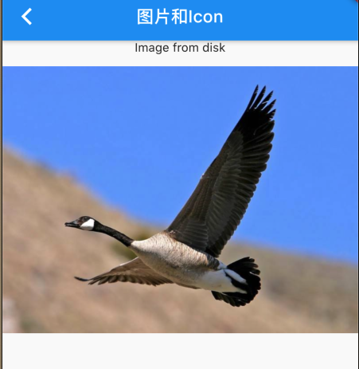
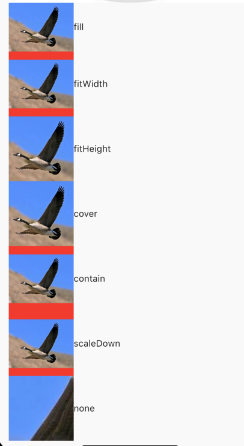

3.5 图片及Icon
3.5.1 图片
Flutter中，我们可以通过image加载并显示图片，数据源可以是asset、file、内存、网络。
Image
imageWidget有一个必选的参数，对应了一个ImageProvider,下边我们来演示一下image的使用。
从assets加载
首先将文件复制到工程指定文件夹内，我们移动至img文件夹下，
然后在pubpspec.yaml内声明
assets:
- img/1.jpeg
然后运行flutter pub get,(或者 android studio 中编辑 pubpspec.yaml点击右上角pub get按钮)。
然后代码中可以使用了，实例:
Image.asset('img/1.jpeg')
效果如图所示：

从网络加载
Image(
image: NetworkImage(
"https://timgsa.baidu.com/timg?image&quality=80&size=b9999_10000&sec=1593336370404&di=c03084a66d06c1af8995088158e907c3&imgtype=0&src=http%3A%2F%2Fdmimg.5054399.com%2Fallimg%2Fpkm%2Fpk%2F13.jpg"),
width: 100.0,
)
或者使用快捷的构造函数Image.network用于从网络加载、显示图片
Image.network(
"https://timgsa.baidu.com/timg?image&quality=80&size=b9999_10000&sec=1593336370404&di=c03084a66d06c1af8995088158e907c3&imgtype=0&src=http%3A%2F%2Fdmimg.5054399.com%2Fallimg%2Fpkm%2Fpk%2F13.jpg",
width: 120,
),
参数
Image在显示图片是定义了一系列参数，通过定义一系列参数达到改变图片外观、大小、混合效果等，我们看下Image的主要参数：
const Image({
...
this.width, //图片的宽
this.height, //图片高度
this.color, //图片的混合色值
this.colorBlendMode, //混合模式
this.fit,//缩放模式
this.alignment = Alignment.center, //对齐方式
this.repeat = ImageRepeat.noRepeat, //重复方式
...
})
- width、height ：用户设置图片大小，当不指定大小，图片则在富容器内进行占满，当设置
width或height时，另外一个会按照比例缩放，但可以通过fit来指定缩放规则。 fit:指定图片在容器内的缩放规则。有如下几个值fill:会拉伸铺满，图片会变形cover: 按照图片的长宽放大后填满容器，不会变形。fitWidth: 图片会随着缩放到显示的宽度，在保证不变形的条件下进行适应宽度,超出部分会裁剪。fitHeight:图片高度会按照等比例缩放到适应高度，超出部分会裁剪。none: 无适应规则，会显示当前容器的大小，如果图片过大，则只会显示中间部分。
看图，简单明了：

color指定混合颜色，colorBlendMode指定混合模式。
例子：
Image(
image: NetworkImage(
"https://timgsa.baidu.com/timg?image&quality=80&size=b9999_10000&sec=1593336370404&di=c03084a66d06c1af8995088158e907c3&imgtype=0&src=http%3A%2F%2Fdmimg.5054399.com%2Fallimg%2Fpkm%2Fpk%2F13.jpg"),
width: 100.0,
color: Colors.greenAccent,
colorBlendMode: BlendMode.colorBurn,
)
效果：

repeat是当图片不够容器大小可以设置沿着X或者Y进行重复铺。
Image(
image: NetworkImage(
"https://timgsa.baidu.com/timg?image&quality=80&size=b9999_10000&sec=1593336370404&di=c03084a66d06c1af8995088158e907c3&imgtype=0&src=http%3A%2F%2Fdmimg.5054399.com%2Fallimg%2Fpkm%2Fpk%2F13.jpg"),
width: 100.0,
height: 200,
color: Colors.greenAccent,
colorBlendMode: BlendMode.colorBurn,
repeat: ImageRepeat.repeat,
)
效果：
Image 从网络下载动画
Image从网络下载会与短暂的 空白时间，这是我们不想看到的，我们可以在加载的时候显示菊花转。
Image(
image: NetworkImage(
"https://ss2.bdstatic.com/70cFvnSh_Q1YnxGkpoWK1HF6hhy/it/u=2053400745,529716701&fm=26&gp=0.jpg"),
width: 100.0,
height: 200,
loadingBuilder: (
BuildContext context,
Widget child,
ImageChunkEvent loadingProgress,
) {
if (loadingProgress == null) {
return child;
}
return CircularProgressIndicator();
},
)
效果如图所示：

3.5.2 Icon
flutter中可以使用iconFont，就是将图标做成文件，通过指定字符加载不同icon.
字体文件中，每一个字符都对应一个位码，不同字体就是字形不同，即字符对应的字形不同，最终渲染的不同的图标。
Flutter默认包含了一套Material Design的字体图标，在pubspec.yaml文件中的配置如下
uses-material-design: true
Material Design所有图标可以在其官网查看.
例子：
Text('\uE915 \uE002 \uE900',
style: TextStyle(
fontFamily: "MaterialIcons",
fontSize: 24.0,
color: Colors.green))
效果：

对着code 找图标明显不是太人性化，那么可以使用cupertino_icons
Icon(
Icons.clear,
color: Colors.red,
),
Icon(
Icons.add,
color: Colors.greenAccent,
),
Icon(
Icons.collections,
color: Colors.blue,
),
Icon(
Icons.extension,
color: Colors.orange,
)

使用自定义字体图标
我们也可以使用自定义字体图标。iconfont.cn上有很多字体图标素材，我们可以选择自己需要的图标打包下载后，会生成一些不同格式的字体文件，在Flutter中，我们使用ttf格式即可。
假设我们项目中需要使用一个书籍图标和微信图标，我们打包下载后导入：
导入字体图标文件；这一步和导入字体文件相同，假设我们的字体图标文件保存在项目根目录下，路径为"fonts/iconfont.ttf"：
fonts:
- family: myIcon #指定一个字体名
fonts:
- asset: fonts/iconfont.ttf
为了使用方便，我们定义一个MyIcons类，功能和Icons类一样：将字体文件中的所有图标都定义成静态变量：
class MyIcons{
// book 图标
static const IconData book = const IconData(
0xe614,
fontFamily: 'myIcon',
matchTextDirection: true
);
// 微信图标
static const IconData wechat = const IconData(
0xec7d,
fontFamily: 'myIcon',
matchTextDirection: true
);
}
使用
Row(
mainAxisAlignment: MainAxisAlignment.center,
children: <Widget>[
Icon(MyIcons.book,color: Colors.purple,),
Icon(MyIcons.wechat,color: Colors.green,),
],
)
运行后效果如图3-22所示：